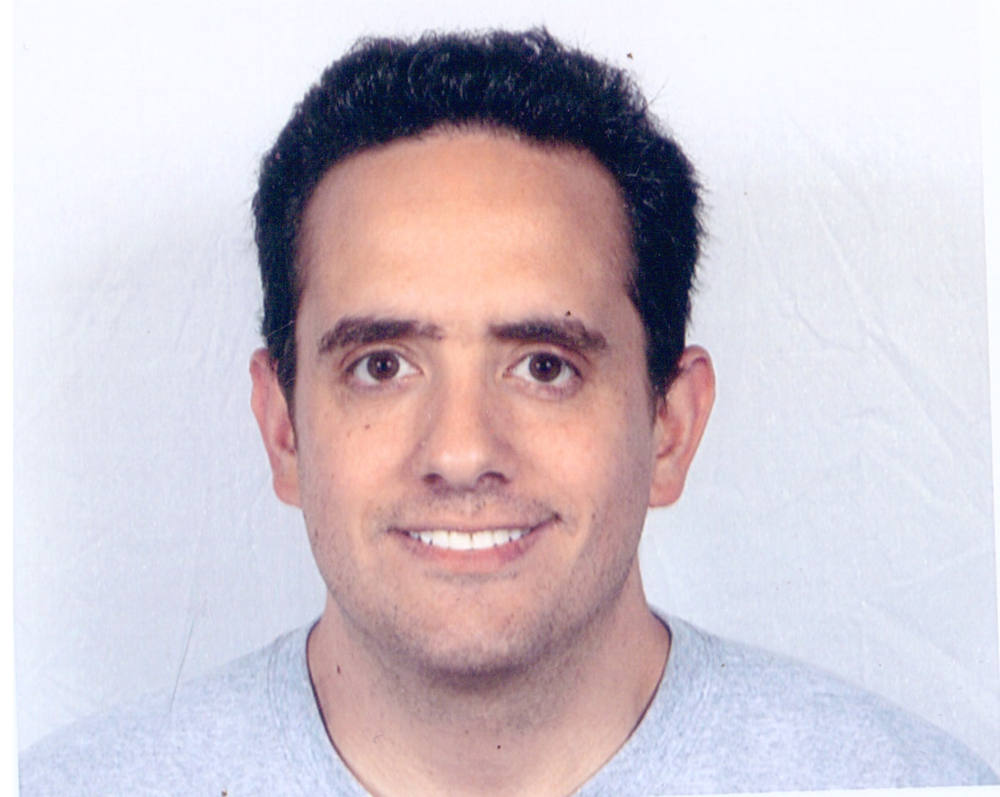

|
 |
Welcome to my professional web-space ! I am a research scientist with 5+ years of experience and academia and industry. My interests include sensing and control of dynamical systems, artificial intelligence, nonlinear optimization and computer vision.
I especially enjoy doing research in the intersection of these fields such as learning and control, systemic and data-driven robust control, multisensing and in-situ diagnostics and control, AI enabled system diagnostics, secure control in cyberphysical systems.
My academic background in applied mathematics and engineering positions me as a researcher capable of applying advanced concepts and methodologies to tackle complex practical problems in a theoretical rigorous, yet practical manner.
|
Education
PhD - Applied Mathematics and Statistics and Scientific Computation, University of Maryland, College Park, USA (May - 2015)
MSc - Applied Mathematics, University of Maryland, College Park, USA (May - 2012)
Diploma (BA + MS) - Electrical and Computer Engineering, National Technical University of Athens, Athens, GR (May - 2007)
Research Interests
Analysis, Control & Optimization of Networked Systems
Learning & Control methods in Cyberphysical Systems
Stability & Performance of Time-Delayed Systems
Vision-Based Analysis, Identification and Diagnostics of Industrial Systems
For more details on the projects that I have been involved with please click on projects section
News
Our papers :
1. Emergence of Cascading Risk and Role of Spatial Locations of Collisions in Time-Delayed Platoon of Vehicles, co-authored with Mr. Guangyi Liu and Prof. Nader Motee,
2. Co-Design of Watermarking and Robust Control for Security in Cyber-Physical Systems, co-authored with Dr. Raman Goyal, Mr. Erfaun Noorani, and Dr. Shantanu Rane
are accepted to appear in the 61st IEEE Conference on Decision and Control.
Our paper :
Physics-Based Nozzle Design Rules for High-Frequency Liquid Metal Jetting co-authored with Prof. Jongmin Seo, Dr. Svyatoslav Korneev, Dr. Morad Behandish and Prof. Adrian Lew, is accepted to appear in Phys. Fluids 10.1063/5.0107566.
Goals
Web-site is getting updated regularly.
Thought Of The Day
\( \Huge e^{-\frac{\pi}{2}}=i^i \)
|